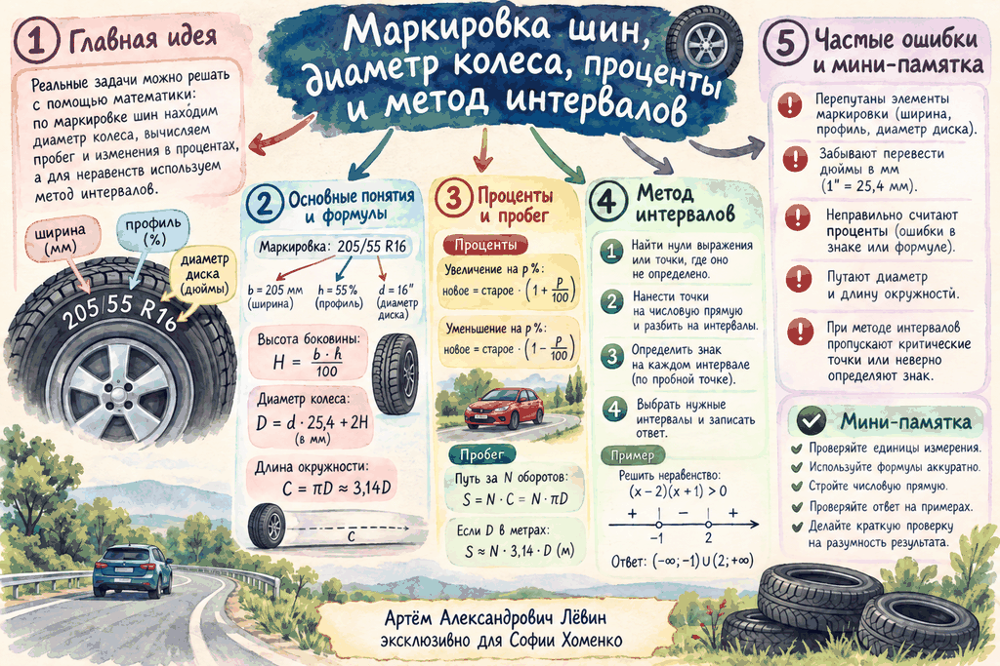

Маркировка — это готовая система данных
В записи 215/50 R17 каждое число отвечает за отдельную величину. Главная задача первого этапа — аккуратно извлечь данные и привести единицы к одному формату.
d = R · 25,4Сначала находим боковину и переводим диаметр диска в миллиметры.
Проверьте несколько маркировок из пособия
Полный диаметр: боковина + диск + боковина
По рисунку формула восстанавливается напрямую: полный диаметр состоит из диаметра диска и двух одинаковых высот боковины.
Заводское колесо
Для 215/50 R17 получаем H = 107,5 мм и d = 431,8 мм.
Разница в миллиметрах и разница в процентах — разные вопросы
Если спрашивают «на сколько миллиметров», достаточно вычесть старое значение из нового. Если спрашивают «на сколько процентов», разность нужно разделить на исходное значение.
Пробег за один оборот
За один оборот колесо проходит длину окружности:
При сравнении процентов число π сокращается, поэтому процент изменения пробега равен проценту изменения диаметра:
Метод интервалов: от корней к знакам
В конце занятия восстановили алгоритм решения квадратного неравенства на примере x² − 3x − 4 ≥ 0.
10 заданий на закрепление
Задания идут от чтения маркировки и прямого расчёта к обратной задаче, процентам и повторению неравенств.
B = 205 мм; H = 112,75 мм; d = 406,4 мм; D = 631,9 мм.
101,25 мм.
634,5 мм.
Увеличился на 5,6 мм.
Примерно на 2,8%.
215 мм.
55; маркировка 205/55 R16.
x ∈ (−1; 6).
x ∈ (−∞; −1] ∪ [3/2; +∞).
x ∈ [−4; 3].
Пособие и памятка
Открыть акварельный постер
